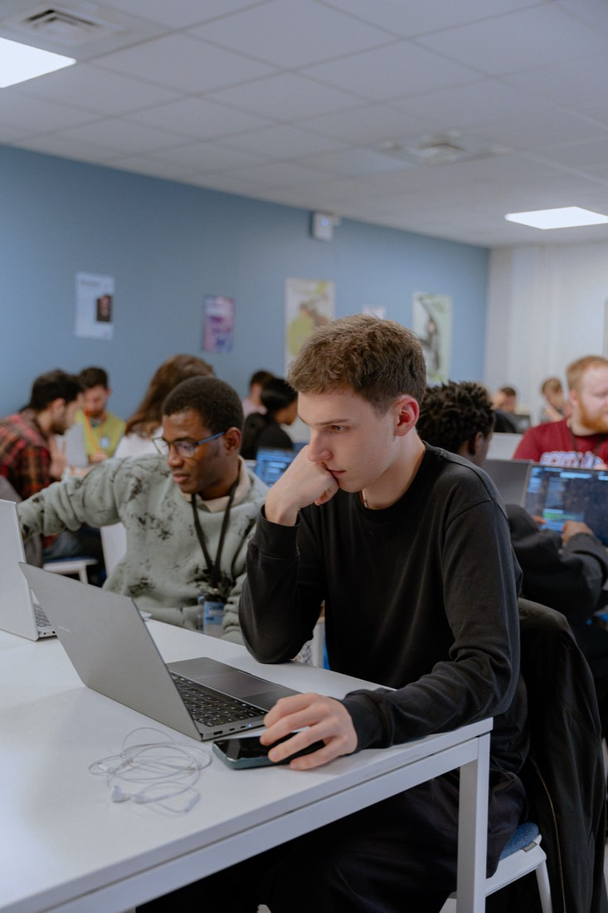
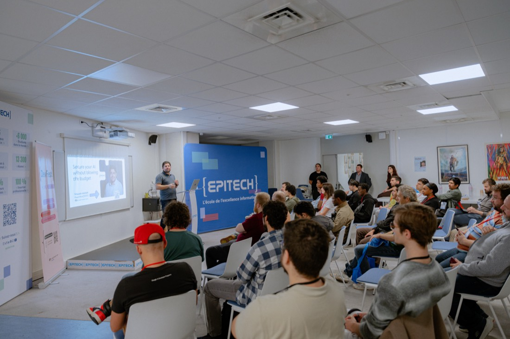
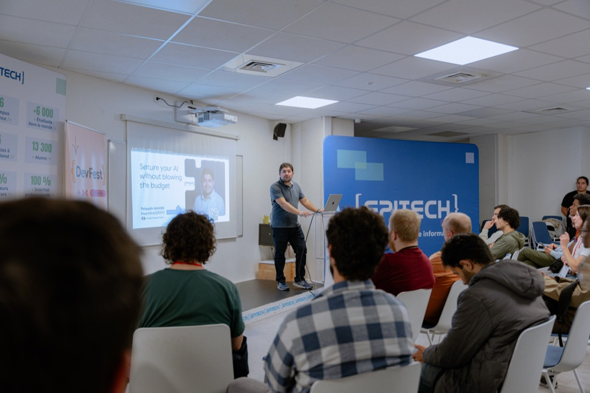
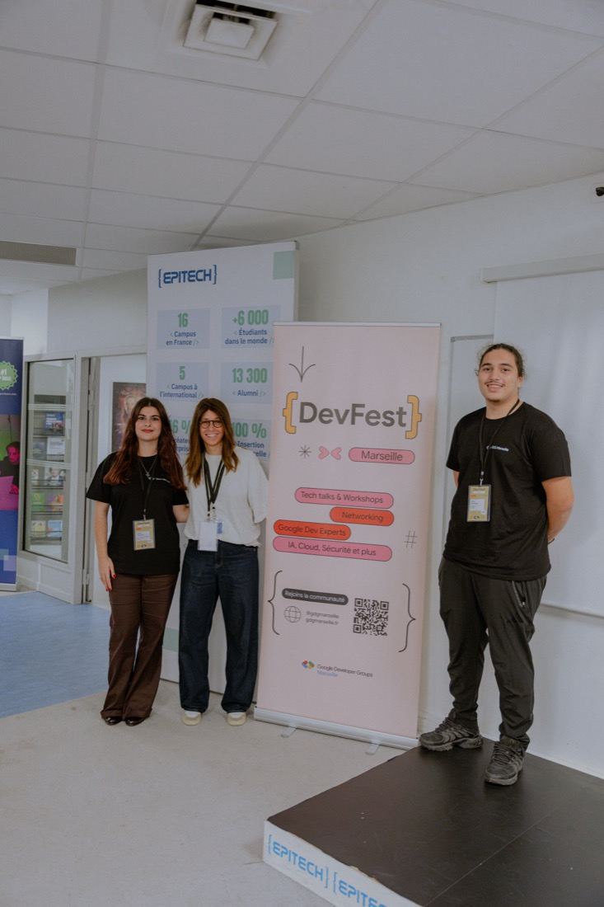
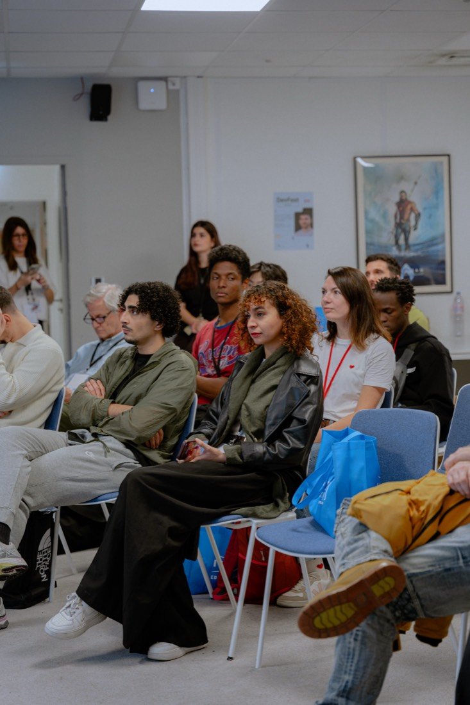

Workshops & hackathons
Pratique l'IA, le Cloud, Flutter ou Android avec des experts, en sessions immersives et collaboratives.
Meetups, workshops et talks pour développeurs, étudiants et curieux. Du débutant à l'expert, ici, à Marseille.
GratuitSans engagement200+ membres déjà là
La communauté en chiffres
Vérifie par toi-même : voir le groupe sur Meetup →
Nous rassemblons les talents locaux pour faire de Marseille un point de rencontre incontournable de la tech.

Pratique l'IA, le Cloud, Flutter ou Android avec des experts, en sessions immersives et collaboratives.

Rencontre celles et ceux qui font bouger l'écosystème à Marseille, dans une ambiance décontractée.

Des retours d'expérience concrets et sans langue de bois, par des intervenants locaux.

Progresse, partage tes idées et élargis ton réseau, dans un cadre bienveillant.
L'esprit du GDG
Des gens qui testent, qui se trompent, qui posent des questions, et surtout qui se rencontrent. Chez nous, quelqu'un qui maîtrise une techno depuis dix ans discute avec quelqu'un qui l'a découverte il y a dix jours.

Trois façons de rejoindre la communauté, selon ce que tu cherches.
Pratique sur des ateliers concrets et rencontre celles et ceux qui font la tech ici.
Voir les événements →Partage ton expérience, apprends des autres, élargis ton réseau. Tu peux aussi proposer un talk.
Proposer un talk →Accueillez un événement, soutenez la communauté, rencontrez les talents de Marseille.
Devenir partenaire →Les prochaines dates et nos derniers événements.
Le tout premier DevFest débarque à Marseille ! Oubliez les conférences passives : une journée inédite pour apprendre, coder et propulser la tech phocéenne ensemble.
12 novembre 2026
Voir l'événementMerci à celles et ceux qui rendent ces événements possibles.
Pose la question que tu trouves bête : c'est souvent la plus utile de la salle.
GratuitSans engagementTu choisis les événements qui t'intéressent